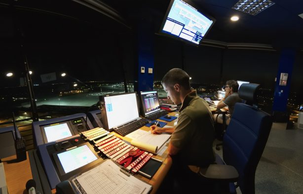

Профессия авиадиспетчера – одна из наиболее опасных и ответственных в мире. Отвечая за порядок движения самолетов в небе, они, как саперы, не имеют права на ошибку.
Рабочий день авиадиспетчера начинается с медосмотра. Специалиста ничего не должно отвлекать от выполнения своих должностных обязанностей, поскольку он отвечает за жизни сотен пассажиров. Затем диспетчер проходит инструктаж (о состоянии погоды и движению самолетов на текущий момент) и принимает дежурство от коллеги.
У каждого диспетчера свой фронт работы
Все воздушное пространство делится на зоны, и каждый диспетчер руководит движением в рамках зоны своей ответственности. Один диспетчер составляет суточный план полетов, второй контролирует движение самолетов по территории аэродрома, третий отвечает за взлет и посадку. И за воздужное пространство на разной высоте также отвечают разные диспетчеры.
Диспетчеры постоянно отслеживают обстановку с помощью специального монитора и находятся на связи с экипажами судов и со своими коллегами из смежных зон ответственности.
Медлительным здесь не место
В зоне ответственности одного авилиспетчера может находится до 20 самолетов сразу, поэтому времени на раскачку или долгие размышления у него нет. Он должен уметь быстро рассредоточить самолеты на безопасное расстояние (между суднами должно быть не менее 3 км), принять решение о запрете на посадку (или наоборот) и вовремя передать новые данные членам экипажа.
Выходные? Нет, не слышали
Одной из особенностей профессии авиадиспетчеров является режим работы. Диспетчеры работают посменно и по скользящему графику: четыре рабочих дня по схеме «день – утро – ночь», один день на то, чтобы отоспаться, и два полноценных выходных. При этом режим работы диспетчера не должен превышать 36 часов в неделю, а отпуск составляет целых 67 дней в год.
Такого понятия, как праздник или отгул, у авиадиспетчеров нет. Они работают когда придется: днем, ночью, на Рождество, в выходные, во время семейных торжеств и т.д. Диспетчер не может просто встать и уйти с работы пораньше или отложить часть дел на завтра – если что-то нужно сделать, это нужно сделать прямо сейчас.
Глаза лучше радара
Даже самые точные приборы дают сбой, и тогда авиадиспетчеру приходится полагатся на весь масшаб своих знаний и органы чувств. В частности, все диспетчеры способны определить направление и скорость ветра по ветроуказателю, а также оценить уровень видимости по ориентирам вокруг: соседним зданиям, водонапорным башням, вышкам сотовой связи и т.д.
Когда самолет спускается до определенной высоты, радар заменяет бинокль, а когда он идет на посадку, диспетчер наблюдает за ним невооруженным глазом.
Стресс – это нормально
Главные враги авиадиспетчера – плохая погода и чрезвычайные ситуации. Зимой гололед и снегопады снижают пропускную способность аэропортов и усложняют взлет и посадку самолетов. А летом их приходится перенаправлять из-за гроз во избежание сильной турбулентности. Все это дополнительный стресс к и без того напряженной работе диспетчера.
Избавиться от него, по мнению самих диспетчеров, помогают сон, здоровый образ жизни, занятия спортом и общение с близкими.
10 новых научных фактов о сне

Сон до сих пор остается одним из наименее изученных явлений в психологии и физиологии. Корреспондент Уильям Парк рассказывает о нескольких интригующих фактах, которые недавно стали известны ученым.
Наука сна - территория загадочная. Исследователи до сих пор не уверены, что происходит в нашем мозгу во время сна, благодаря чему мы видим сны, и что они означают. Но в последние годы наука открыла несколько вещей о том, что происходит с нашим мозгом в объятиях Морфея.
10 удивительных фактов о том, почему нам необходим полноценный ночной сон:
- 1.Знакомые запахи помогают формировать воспоминания в мозге во время сна, улучшая производительность вашего обучения.
- 2. Вздрагивание тела, когда мы засыпаем - очень распространенное явление.
Оно абсолютно
безвредно
и
называется
"гипнотические рывки".

- 3. Одно небольшое исследование показало, что игра на диджериду (музыкальный духовой инструмент аборигенов Австралии, который представляет собой длинную деревянную или бамбуковую трубу. - Ред.) способствует улучшению сна, потому что укрепляет мышцы, которые участвуют в процессе дыхания.
- 4. Анализ суточных биоритмов человека показывает, что наиболее естественное время для дневного сна - между 14:00 и 16:00. Хотя сон во второй половине дня больше способствует восстановлению организма, небольшой отдых около полудня повышает творческий потенциал.
- 5.Исследования показали, что мутация в гене DEC2 позволяет некоторым людям полностью высыпаться за четыре часа сна ночью. Никаких побочных эффектов на организм от такого короткого сна в них не обнаружили.
- 6. Однако, вряд ли вы относитесь к этой группе людей. Тех, кому посчастливилось высыпаться за несколько часов, не более 5% на Земле. Большинству людей нужно 8 часов сна. Но около 30% не позволяют себе спать более шести часов в ночь.
- 7.Одна из теорий о том, почему нам необходимо спать, утверждает, что во время сна наш мозг упорядочивает воспоминания и впечатления, которые он получил в течение дня. Кажется, во сне мы можем справляться с воспоминаниями о неприятных или травмирующих событиях.
- 8. Некоторые исследователи с помощью анализа мозговой активности смогли
реконструировать
видеосюжеты,
которые
люди просматривали днем на канале YouTube. Ученые уверены, что не за горами тот день, когда
подобная
методика поможет расшифровывать сны.

- 9. Военные исследователи обнаружили, что, если вы выспитесь заранее (например, ложась спать ранее в течение нескольких дней), лишение сна не будет таким тяжелым.
- 10. Если 12 ночей подряд вы будете спать всего по 6 часов, состояние вашего организма будет таким, как при наличии 0,1% алкоголя в крови - неразборчивая речь, нарушение равновесия, ухудшение памяти. Другими словами, это состояние опьянения.